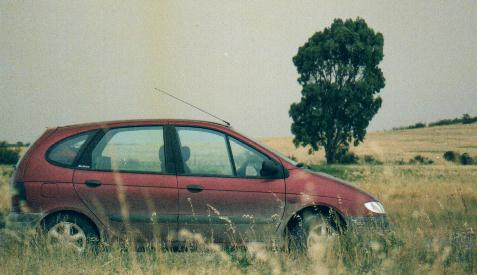

Patagonia 2001
o
“Como ir desde Buenos Aires hasta
Tierra del Fuego… y volver para contarlo”
Este es el relato de nuestras apasionantes vacaciones
familiares que realizamos entre el 5 y el 20 de Enero de 2001 a un lugar
magnífico: Tierra del Fuego
El extraño sub-título de este relato se debe a que llevar
una familia en auto más de 7.400 Km. no es tarea fácil. No
es que los caminos sean tan difíciles como una vez lo fueron. No
es que las comodidades de los vehículos modernos sean deficientes.
El costo tampoco es prohibitivo.
Pero los 4 largos días de manejo tan solo para el viaje de ida,
confinados en un auto, solo pueden funcionar si existe un objetivo compartido,
y la química necesaria para llevar adelante la empresa.
Y la química la tenemos, y paso a enumerar algunas de las virtudes
familiares que lo posibilitan:
- El hecho que seamos dos los que manejamos. Imprescindible.
- La experiencia de más de 10 viajes anteriores a la Patagonia, siendo
este el quinto en que entraríamos a la provincia de Santa Cruz.
Esto nos ha permitido conocer lugares convenientes para pernoctar, donde
cargar combustible, las distancias, etc. Nos ha permitido determinar los
enseres mínimos necesarios (ropa, herramientas, etc.) que evitan
sobrecargar el auto. Y para nuestros hijos, enfrentar estos largos viajes
ya casi es un hábito.
- Una pasión por la naturaleza, los paisajes, la fauna, la flora,
incluso la geología, que nos atrae kilómetro a kilómetro,
erradicando toda posibilidad de hallar tedioso un camino que, de alguna
manera, lo es.
Entre los objetivos del viaje destaco mi interés por descubrir
e identificar todas las aves posibles que sobrevuelan el camino y habitan
los lugares de destino. Además, y recién por segunda vez,
salgo a dar rienda suelta a una incipiente e irresistible tentación:
la de recolectar muestras de los restos de una de las clases de animales
más abundantes: los moluscos (o caracoles) marinos, a fin de enriquecer
mi pequeña colección.
El auto es un Renault Scenic con motor de 2 litros, año 1999,
y viajamos 5 pasajeros: yo, mi esposa, y nuestros tres hijos (Jasmine de
16, Nico de 14 y Clio de 11).
Plan de viaje:
El plan era manejar hasta la isla de Tierra del Fuego en 4 días
según un cronograma detallado, pasando allí 8 días.
Reservamos 5 días para la vuelta, pero este tramo aún no
estaba planificado en detalle. En total contábamos con 17 días.
Los destinos fijos en la isla serían: Estancia Cabo San Pablo, ubicada
sobre el Océano Atlántico (4 noches), y luego 5 noches en
Ushuaia. Tanto a la ida como a la vuelta cruzaríamos la Patagonia
por el camino más rápido y directo: la Ruta Nacional 3.
Ya todo está listo, así que subamos todos a bordo, saquemos
el auto - ya cargado - del garaje, y comencemos a rodar hacia la Patagonia…
¡Hacé click sobre
el auto para comezar!

|